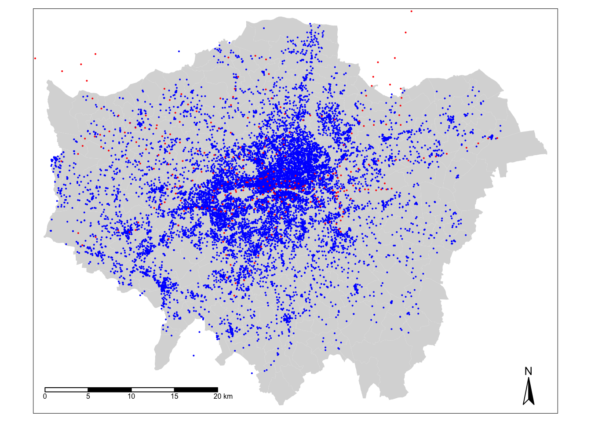
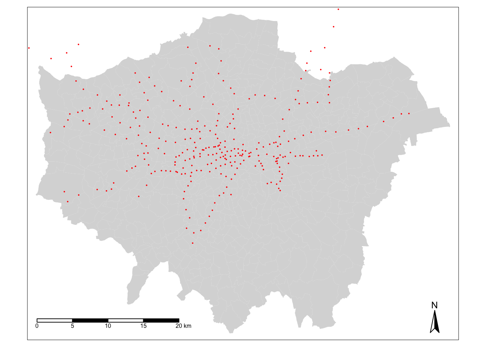
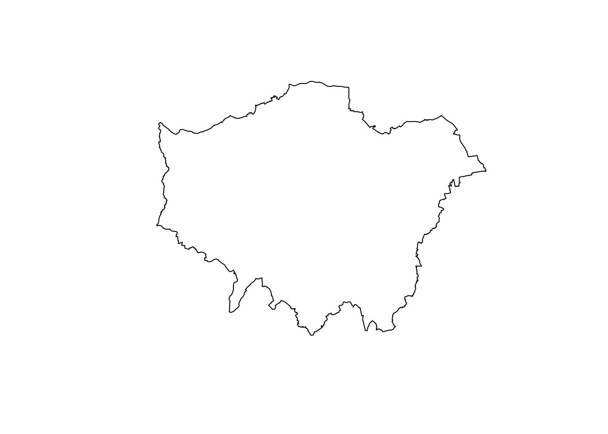
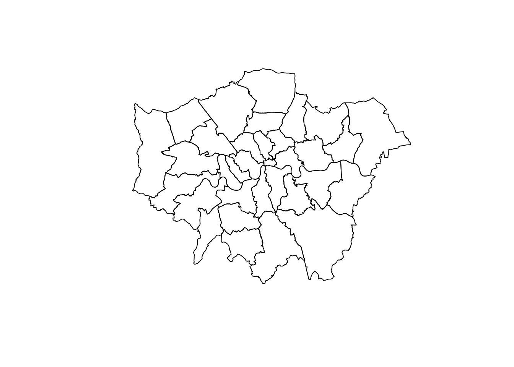
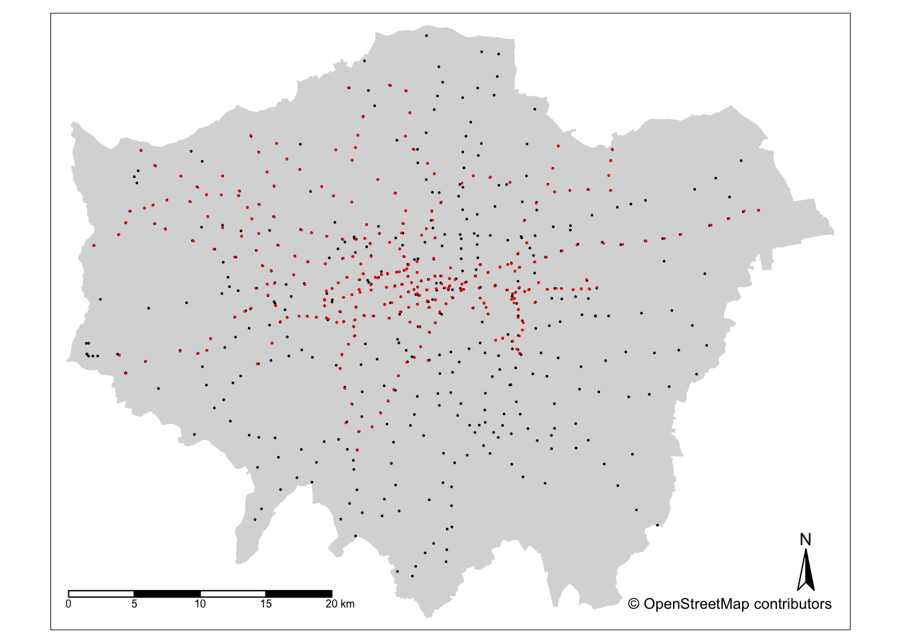
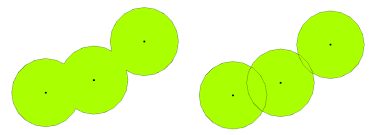
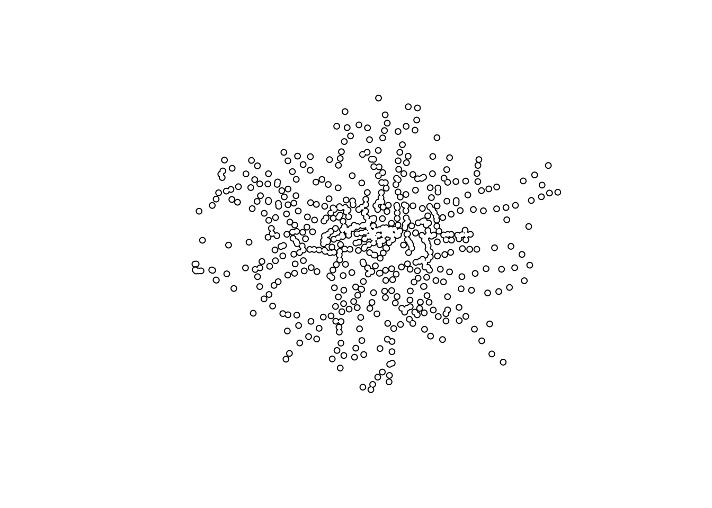
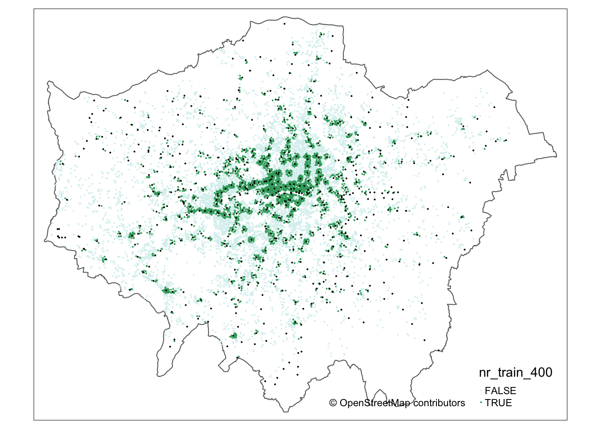
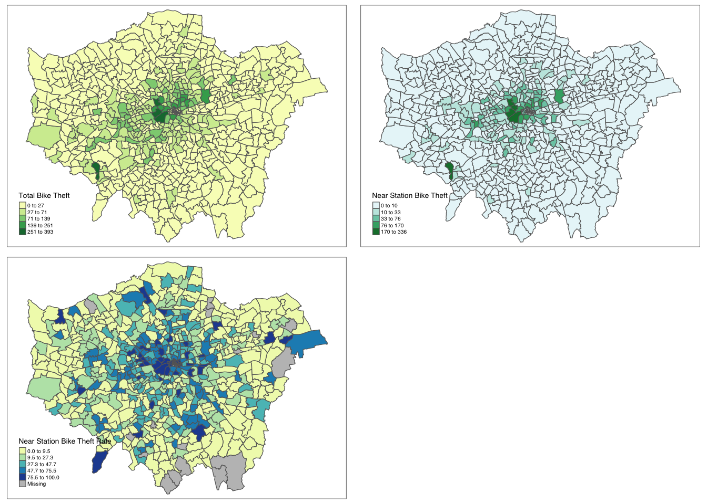
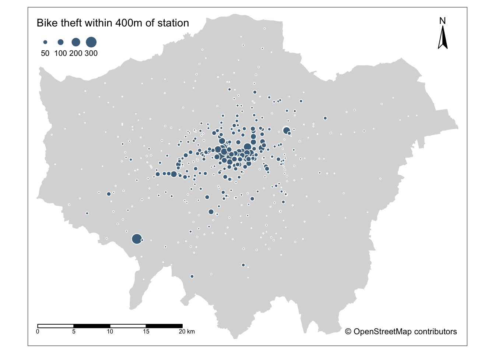

7 Analysing Spatial Patterns II: Geometric Operations & Spatial Queries
Welcome to Week 7 in Geocomputation!
In a change to advertised content, this week, we’ll be looking at the use of geometric operations within spatial data processing and analysis, moving Point Pattern Analysis to next week, Interpolation to Week 9 and Geodemographics to Week 10. We’ll be covering Advanced Visualisations within each of the following weeks.
Geometric operations and spatial queries are not really a theorectical topic per se in spatial “pattern” analysis but rather essential building blocks to overall spatial data processing and analysis.
This is because - and the clue is in the name - they conduct incredibly useful operations and queries on or using the geometry of our datasets, from calculating the area covered by an individual polygon in an areal unit dataset, or subsetting the spatial extent of a dataset based on another, to running buffer and point-in-polygon calculations.
Whilst originally my intentions were to combine this week with your work on Point Pattern Analysis, after writing up this week’s practical, I’ve realised that this is more than enough content for you to look through for this week’s Geocomputation material.
We’ll have a short lecture introducing these different operations and a longer practical session looking at their application in terms of spatial data cleaning, validation and analysis and we’ll also learn how to download data from OpenStreetMap. In terms of data visualisation, you’ll learn how to make interactive maps with tmap, small multiples and proportional symbol maps.
Week 7 in Geocomp
This week’s content introduces you to geometric operations and their different uses in spatial analysis.
We have two areas of work to focus on:
- Understanding different geometric operations and spatial queries and their respective applications.
- Using geometric operations and spatial queries to clean, validate and analyse spatial data.
This week’s content is split into 3 parts:
- Workshop Housekeeping (20 minutes)
- Geometric Operations & Spatial Queries (40 minutes)
- Geometric Operations & Spatial Queries in Action (90 minutes)
This week, we have 1 lecture and 2 assignments within this week’s workshop.
Learning Objectives
By the end of this week, you should be able to:
- Understand how to use different geometric operations and spatial queries within your spatial analysis workflow for data cleaning, processing and analysis
- Be able to implement geometric operations, including clips and unions, and spatial queries within R and
sf - Know how to download data from OpenStreetMap using the
osmdatapackage - Make small multiples of maps and arrange them togoether
- Create proportional symbol maps
This week, we’ll be investigating bike theft in London in 2019 - and look to confirm a very simple hypothesis: that bike theft primarily occurs near tube and train stations.
We’ll be investigating its distribution across London using the point data provided within our crime dataset.
We’ll then compare this distribution to the location of train and tube stations using specific geometric operations and spatial queries that can compare the geometry of two (or more) datasets.
To complete this analysis, we’ll be using two types of spatia data:
- Bike theft in London in 2019: A 2019 version of our crime dataset for London. With COVID-19 changing commuting patterns etc., we will focus on 2019.
- Train and Tube Stations locations in London
We’ll also learn how to download data from OpenStreetMap as well as use an interactive version of tmap to explore the distribution of the locations of individual bike theft against the locations of these stations.
Workshop Housekeeping
Let’s get ourselves ready to start our lecture and practical content by first downloading the relevant data and loading this within our script.
Setting up your script
Open a new script within your GEOG0030 project (Shift + Ctl/Cmd + N) and save this script as
wk7-bike-theft-analysis.r.At the top of your script, add the following metdata (substitute accordingly):
Dependencies (aka libraries)
Now we’ll install the libraries we need for this week.
All of the geometric operations and spatial queries we will use are contained within the sf library.
We will install the leaflet library to enable interactive mapping in tmap.
We will also use osmdata to downlad data directly from OpenStreetMap.
Remember to use the `install.packages(“package”) command in your console.
- Within your script, add the following libraries for loading:
# Libraries used in this script:
library(tidyverse)
library(here)
library(magrittr)
library(sf)
library(tmap)
library(janitor)
library(RColorBrewer)
library(leaflet)
library(osmdata)Remember to select the lines of code you want to run and press CMD (Mac)/CTRL(Windows) + Enter/Return - we won’t remind you to run each line of code in the remainder of the practical sessions.
Datasets for this week
This week, we’ll start off using three datasets:
- London Ward boundaries from 2018 (this should already be in your raw data folder)
- 2019 crime in London from data.police.uk
- Train and Tube Stations from TfL.
As we’ve already been through the data processing required for the 2020 crime dataset, this week, I’ll save you on some data cleaning!
1. 2019 crime in London
You can find a pre-stacked single csv of all crime from 2019 here.
This csv was created using the exact same steps we completed in Practical 3 and 4. Therefore, if you would like to challenge yourself, go ahead and create this dataset yourself using the Command Line and R code we used in those practicals to create your 2019 crime csv.
Whichever approach you use, store your final all_crime_2019.csv in your data/raw/crime folder.
2. London Train and Tube Stations
Through an online search, I’ve managed to find a KML version of TfL’s Train and Tube Stations data feed that is accessible in their Open Data portal.
You can downlaod this KML directly here as it does not seem to be available directly from the portal.
Move your download to your raw data folder and create a new transport folder to contain it.
Loading our data
Let’s first load our London Ward shapefile from our raw -> boundaries -> 2018 folder.
- Load the 2018 London Ward boundaries:
# Read in our 2018 London Ward boundaries
london_ward_shp <- read_sf("data/raw/boundaries/2018/London_Ward.shp")We’ve used this dataset quite a few times - and if you remember in Week 5, when we first utilised the data, we checked it’s Coordinate Reference System (CRS) to confirm that it was in British National Grid (BNG).
We’ve slacked off recently with double-checking our CRSs because we’ve essentially only used one type of spatial data - these Ward shapefiles that have all come from the same source.
This week, we’re going to double-check the CRS of all our datasets.
If you remember the police crime data is provided with a Latitude and Longitude (i.e. coordinate references used in the Geographic Coordinate System of WGS84), so at least for this dataset, we know we’re likely going to run into differences in our CRS.
We will also need to see what CRS our Tube and Train Stations data is provided in.
- Check the CRS of our
london_ward_shpspatial dataframe:
## Coordinate Reference System:
## User input: 27700
## wkt:
## PROJCS["OSGB 1936 / British National Grid",
## GEOGCS["OSGB 1936",
## DATUM["OSGB_1936",
## SPHEROID["Airy 1830",6377563.396,299.3249646,
## AUTHORITY["EPSG","7001"]],
## TOWGS84[446.448,-125.157,542.06,0.15,0.247,0.842,-20.489],
## AUTHORITY["EPSG","6277"]],
## PRIMEM["Greenwich",0,
## AUTHORITY["EPSG","8901"]],
## UNIT["degree",0.0174532925199433,
## AUTHORITY["EPSG","9122"]],
## AUTHORITY["EPSG","4277"]],
## PROJECTION["Transverse_Mercator"],
## PARAMETER["latitude_of_origin",49],
## PARAMETER["central_meridian",-2],
## PARAMETER["scale_factor",0.9996012717],
## PARAMETER["false_easting",400000],
## PARAMETER["false_northing",-100000],
## UNIT["metre",1,
## AUTHORITY["EPSG","9001"]],
## AXIS["Easting",EAST],
## AXIS["Northing",NORTH],
## AUTHORITY["EPSG","27700"]]Of course it should be of no surprise that our london_ward_shp spatial dataframe is in BNG / ESPG: 27700, however it’s always good to check!
Let’s go ahead and read in our stations dataset.
- Load the London Tube and Trains dataset:
This dataset is provided as a kml file, which stands for Keyhole Markup Language (KML).
KML was originally created as a file format used to display geographic data in Google Earth.
As a result, if we think back to our lectures on Geographic vs. Projected Coordinate Systems (GCS/PCS), considering GoogleEarth is a 3D application, it is quite likely that the CRS associated with this dataset will be a GCS, not a PCS.
So we definitely need to check what CRS this dataset is in and decide whether we’ll need to do some reprojecting.
- Check the CRS of our
london_stationsspatial dataframe:
## Coordinate Reference System:
## User input: 4326
## wkt:
## GEOGCS["WGS 84",
## DATUM["WGS_1984",
## SPHEROID["WGS 84",6378137,298.257223563,
## AUTHORITY["EPSG","7030"]],
## AUTHORITY["EPSG","6326"]],
## PRIMEM["Greenwich",0,
## AUTHORITY["EPSG","8901"]],
## UNIT["degree",0.0174532925199433,
## AUTHORITY["EPSG","9122"]],
## AUTHORITY["EPSG","4326"]]Ahah - our suspicions are confirmed! Our london_stations spatial dataframe is in WGS84 / EPSG: 4326.
We’re going to need to reproject our data in order to use this dataframe with our london_ward_shp spatial dataframe.
Luckily in R and the sf library, this reprojection is a relatively straight-forward transformation, requiring only one function: st_transform.
The function is very simple to use - you only need to provide the function with the dataset and the code for the new CRS you wish to use with the data.
For now, we will simply store the result of this transformation as an overwrite of our current variable - but you could, in the future, rewrite this code to use pipes to pipe this transformation when loading the dataset if you are already aware of its CRS.
- Transform our
london_stationsspatial dataframe from WGS84 / EPSG: 4326 to BNG / EPSG: 27700:
# Reproject our london_stations spatial dataframe from WGS84 to BNG Overwrite our
# original variable
london_stations <- st_transform(london_stations, 27700)- We can double-check our new variable is in the correct CRS by using the
st_crscommand, but this time simply enter it into into the console:
## Coordinate Reference System:
## User input: EPSG:27700
## wkt:
## PROJCS["OSGB 1936 / British National Grid",
## GEOGCS["OSGB 1936",
## DATUM["OSGB_1936",
## SPHEROID["Airy 1830",6377563.396,299.3249646,
## AUTHORITY["EPSG","7001"]],
## TOWGS84[446.448,-125.157,542.06,0.15,0.247,0.842,-20.489],
## AUTHORITY["EPSG","6277"]],
## PRIMEM["Greenwich",0,
## AUTHORITY["EPSG","8901"]],
## UNIT["degree",0.0174532925199433,
## AUTHORITY["EPSG","9122"]],
## AUTHORITY["EPSG","4277"]],
## PROJECTION["Transverse_Mercator"],
## PARAMETER["latitude_of_origin",49],
## PARAMETER["central_meridian",-2],
## PARAMETER["scale_factor",0.9996012717],
## PARAMETER["false_easting",400000],
## PARAMETER["false_northing",-100000],
## UNIT["metre",1,
## AUTHORITY["EPSG","9001"]],
## AXIS["Easting",EAST],
## AXIS["Northing",NORTH],
## AUTHORITY["EPSG","27700"]]You should see that our london_stations spatial dataframe is now in BNG / EPSG: 27700.
Deciding which CRS to use
This is only second time in our practicals that we’ve needed to consider reprojecting our datasets - so how did I choose to use BNG?
Whilst we have two datasets in WGS84 (as we’ll confirm below) and one in BNG, unfortunately in spatial analysis, majority simply does not rule.
As you should remember from our lectures in Week 3 on Projections and Coordinate Reference Systems, we should always choose a CRS that best represents the reality on the ground for our area of interest and the type of analysis we want to conduct.
This week, we will be conducting a lot of analysis that is reliant on the distance between two points being captured accurately and we’ll also be only focusing on London as our area of interest.
In this case, therefore, BNG is the most sensible and accurate choice moving forward (it rarely isn’t when it comes to mapping data about Great Britain!).
If we didn’t transform our data, not only would our analysis be incorrect but our visualisations would also not work correctly.
We’re now ready to load our final dataset - our csv that contains our crime from 2019.
From this csv, we want to do three things:
- Extract only those crimes that are bicycle thefts, i.e.
crime_type == "bicycle theft". - Convert our csv into a spatial dataframe that shows the locations of our crimes, determined by the latitude and longitudes provided, as points.
- Transform our data from WGS84 / 4326 to BNG / 27700.
Now, we’re getting pretty used to looking at code and cleaning data - so it should come of no suprise to you that we can complete all three steps at once, using our handy %>% pipe operator.
We’ll explain each line of code in the comments to help you read through the different functions, but the main function you have yet come across is: st_as_sf.
What this function does is convert any vector, matrix or dataframe you provide in the argument into a point spatial dataframe, as long as you provide it with two columns to use for their coordinates (a bit like we did when using Q-GIS). You should also include the CRS for which those coordinates are based on, i.e. in our case, WGS84 / 4236.
- Load, clean and process our 2019 crime csv:
# Read in our crime data csv from our raw data folder
bike_theft_2019 <- read_csv("data/raw/crime/all_crime_2019.csv") %>%
# clean names
clean_names() %>%
# filter according to crime type and ensure we have no NAs in our dataset
filter(crime_type == "Bicycle theft" & !is.na(longitude) & !is.na(latitude)) %>%
# select just the longitude and latitude columns
select(longitude, latitude) %>%
# transform into a point spatial dataframe note providing the columns as the
# coordinates to use plus the CRS, which as our columns are long/lat is
# WGS84/4236
st_as_sf(coords = c("longitude", "latitude"), crs = 4236) %>%
# convert into BNG
st_transform(27700)## Warning: Missing column names filled in: 'X1' [1]We now have our three datasets loaded, it’s time for a little data checking.
We can see just from our Environment window that in total, we have 302 stations and 18,744 crimes to look at in our analysis.
We can double-check the (Attribute) tables of our newly created spatial dataframes to see what data we have to work with.
You can either do this manually by clicking on the variable, or using commands such as head(), summary() and names() to get an understanding of our dataframe structures and the field names present - you can choose your approach, but make sure to look at your data.
As you should remember from the code above, for our bicycle theft data, we actually only have our geometry column because this is all that we extracted from our crime csv.
For our london_stations spatial dataframe, we have a little more information, including the name of the station and its address - as well as its geometry.
Let’s go ahead and do the next thing on our “how to do spatial analysis” checklist and check the distribution of our data - for the first time, we’ll actually map all of our data together on one map.
We’ll only customise this a little bit for now - but you could, of course, make this look a lot fancier than the map we’ll produce now!
- Map all three layers of data onto a single map using
tmap:
# Plot our London Wards first
tm_shape(london_ward_shp) + tm_fill() + # Then bike crime as blue
tm_shape(bike_theft_2019) + tm_dots(col = "blue") + # Then our stations as red
tm_shape(london_stations) + tm_dots(col = "red") + # Add a north arrow
tm_compass(type = "arrow", position = c("right", "bottom")) + # And a scale bar
tm_scale_bar(breaks = c(0, 5, 10, 15, 20), position = c("left", "bottom"))
Wow, intesting to see right?
Let’s think about the distribution of our data - we can already see that our bike theft is obviously highly concentrated in the centre of London although we can certainly see some clusters in the Greater London areas. This certainly is going to be an interesting dataset to analyse!
Let’s go ahead and temporally remove the bike theft data from our map for now to see where our tube and train stations are located.
- To remove the bike data, simply put a comment sign in front of that piece of code and re-run the code:
# Plot our London Wards first
tm_shape(london_ward_shp) + tm_fill() + # Then bike crime as blue COMMENTED OUT tm_shape(bike_theft_2019) +
# tm_dots(col='blue') + Then our stations as red
tm_shape(london_stations) + tm_dots(col = "red") + # Add a north arrow
tm_compass(type = "arrow", position = c("right", "bottom")) + # And a scale bar
tm_scale_bar(breaks = c(0, 5, 10, 15, 20), position = c("left", "bottom"))
Hmmm - well that’s interesting. We can see our train and tube stations are only present in primarily the north of London - and not really present in the south. This isn’t quite right! Whilst this is easier to spot if you’re familiar with the London train network - but there should definitely be train stations in the south of London…?!
If we look at the distribution of our stations - and use our knowledge of the London train and tube networks (I appreciate not all of us might have!) - we can quickly identify that our original dataset only contains those train stations used by TfL within the tube network rather than all the stations in London:

It looks like we’re going to need to find some more data for our analysis!
But this isn’t the only problem with our dataset - we can see that both our bike_theft spatial dataframe and our london_stations spatial dataframe extend beyond our London boundary.
We therefore need to do some further cleaning and processing of our datasets to get them into a more “tidy” and complete format for analysis.
But so far, we’ve only completed cleaning and processing on the dataframe aspect of our spatial data, never on the geometry or spatial component of our spatial data - so, how do we do this?
The answer is: geometric operations and spatial queries.
Geometric Operations & Spatial Queries
Geometric operations use geometry functions to take spatial data as input (one or more datasets), analyze the data, then produce output data that is the derivative of the analysis performed on the input data (Esri, 2020).
Spatial queries use the geometry of two datasets to compare them against specific spatial requirements - the result of these queries can then be used to select or remove features that do or do not meet these requirements.
This type of spatial data manipulation and analysis is often known as geoprocessing.
These operations and queries are the building blocks of GIScience and it is incredibly impressive how much you can achieve with some very simple functions.
They can be used to clean, tidy, process, validate and even analyse data - all through simply managing and manipulating geometry within space.
But, as these functions are spatially-dependent, it is incredibly important that we use a CRS that accurately represents our data within space, i.e. it tries to balanace the distortion between distance, area and shape (although which you prioritise out of these can be dependent on the types of analysis you are completing).
We are using BNG, which, as we know from our previous lecture and above, does the best job of preserving all three for data in Great Britain.
This week’s lecture outlines geometric operations and spatial queries and provides examples of what they can be used to accomplish with spatial data.
But before you get started with the lecture, I’d recommend downloading the sf cheatsheet - and preferably printing it off (yes, for this once, print!) - to use as a guide as we move through the lecture and the next section.
You should read each of the functions available and highlight any that you remember seeing in previous practicals.
You, of course, do not need to know each of these off by heart, but reading through these examples can give you a general understanding of the operations and queries you can conduct.
Geometric Operations & Spatial Queries In Action
As you’ll find out in this week’s practical, much of the “geoprocessing” that we need to complete with our data can be completed using different approaches of both geometric operations and spatial queries - and, as a result, can be completed in many different orders.
When we use geometric operations, we are always taking a data input (or inputs), manipulating their geometry according to the function/operation you’re using and then providing a modified geometry as a new data output (a spatial dataframe in R or dataset in Q-GIS, for example).
The use of these operations can be quite time-consuming and, in many scenarios, we often do not want edited geometry returned to us, but simply the information on the result of our query that we can then attribute to our original dataset. For example, does this bike theft fall within 400m of a station - yes or no?
In this case, spatial queries are the way forward. As you’ll see below, a spatial query will only return a TRUE or FALSE statement to your question. In Q-GIS, this is the “selection” process seen in the above GIF; in R and sf, you’ll be returned either a list of the indexes of those features that are TRUE to the question or a matrix that states either TRUE or FALSE for every single feature.
With spatial queries, you do not edit the geometry of the dataset you’re analysing, but within R, you will end up with an attribute that you can join to said dataset (as we’ll do today). With that TRUE/FALSE output joined to our spatial dataframe, you can, at a later point in time, use that attribute to select only those that are TRUE or FALSE to create a new dataset if you want.
Spatial queries are often much quicker to implement, but the disadvantage is that you won’t end up with an additional dataset that you might want for visualisation purposes.
We’ll see this below when using a buffer to analyse our bike theft data.
Practical 6 - Part One: Geometric Operations & Spatial Queries Approaches
Of all spatial data processing and analysis, geometric operations and spatial queries are certainly best explained through demonstration!
Therefore, to clean, process and analysis our data, we can demonstrate a range of operations and queries highlighted by our first lecture.
We’re going to need to reduce both our our bike_theft spatial dataframe and our london_stations spatial dataframe to only contain data within our london_ward_shp spatial dataframe. This is known as either a subset or a clip and there are differences between them and how you implement them.
Furthermore, we need additional data that adds in the remaining train stations that exist in London - but are managed by companies other than TfL.
We’ll therefore look into how we can use geometric operations and spatial queries to compare two similar datasets (as well as download data from OpenStreetMap).
Once we’ve created our two final datasets, we can then think of ways we can look to quantify the relationship between the locations of bike theft and train stations - using both geometric operation and spatial query approaches.
Let’s get started with the simplest task at hand - “clipping” our dataset to our london_ward_shp spatial dataframe.
Clipping our bike theft data to London
When we want to reduce a dataset to the spatial extent of another, there are two different approaches to conducting this in spatial analysis - a subset or a clip - which each deal with the geometry of the resulting dataset in slightly different ways.
- A clip-type operation works a bit like a cookie-cutter - it will take the geometry of “dough” layer (i.e. the layer you want to clip), places a “cookie-cutter” layer on top (i.e. the layer you want to clip by) and then returns only the dough contained within the cookie-cutter. This will mean that the geometry of our resulting “dough” layer will be modified, if it contains observation features that extend further than the “cookie-cutter” extent - it will literally “cut” the geometry of our data.

- A subset-type operation is what is known in GIScience-speak as a select by location query - in this case, our subset will return the full geometry of each observation feature that intersects with our “clip when our”’“cookie-cutter” layer. Any geometry that does not intersect with our clip layer will be removed from the geometry of our resulting layer.

Luckily for us, as we are using point data, we can (theorectically) use either approach because it is not possible to split the geometry of a single point feature. However, if a point feature does fall on the same geometry as our “clip” layer, it will be excluded from our dataset.
When it comes to polygon and line data, not understanding the differences between the two approaches can lead you into difficulties with your data processing - as outlined by our examples in the GIFs above and below - there will be differences in the feature geometry between the clipped layer and the subset layer:

As you should be able to see, when our polygons are clipped, those that intersect with the the boundary of the clip layer are “cut” to conform to this extent. When we use the subset / spatial query operation, those that intersect with the the boundary of the clip layer are returned in their entirety and not cut to conform to the precse extent of the clip layer.
Implementing spatial subsetting and clipping in R
Each approach is implemented differently in R - and can actually be used together to speed up the effiency in your code.
To subset our data, we only need to use the base R library to selection we learnt about in Week 5, using [] brackets.
- Subset our
bike_theft_2019spatial dataframe by ourlondon_ward_shpspatial dataframe:
# Subset our bike_theft_2019 spatial dataframe by the london_ward_shp spatial
# dataframe Note the comma - do not forget this!
bike_theft_2019_subset <- bike_theft_2019[london_ward_shp, ]You should now see our subset has 18,690 variables instead of 18,744. You can go ahead and plot() the subset layer using your console if you’d like.
Conversely, if we want to clip our data, we need to use the st_intersection command from the sf library.
Frustratingly, this is a slightly mis-leading name as we see the use of the word ‘intersects’ in our subset above in Q-GIS and within another function within sf, st_intersects() (which is more similar to the QGIS spatial query), however, this is what the function is called, so please just be aware of this moving forward.
As you’ll see in your sf cheatsheet, the st_intersection() function “creates geometry to the shared portion of x and y” (Garnett, 2019), aka performs our clip.
- Clip our our
bike_theft_2019spatial dataframe by ourlondon_ward_shpspatial dataframe using thest_intersection()query:
# Subset our bike_theft_2019 spatial dataframe by the london_ward_shp spatial
# dataframe Note we overwrite our original variable here, as we'll continue to
# use this in our code
bike_theft_2019 <- bike_theft_2019 %>%
st_intersection(london_ward_shp)## Warning: attribute variables are assumed to be spatially constant throughout all
## geometriesAgain, you should now see we have 18,690 obesrvations in our bike_theft_2019 spatial dataframe.
We can see, therefore, with our point data, whichever approach we would take would not affect the final outcome - this is not necessarily the same for line and polygon data as shown above.
As we only need one of these outputs, you can go ahead and remove the bike_theft_2019_subset spatial dataframe from your environment (rm(bike_theft_2019_subset) in your console) to keep our Environment tidy.
Which approach should I use in the future?
Which approach you use with future data is always dependent on the dataset you want to use - and the output you need. For example, is keeping the geometry of your observation features in your dataset important?
Out of the two, the subset approach is the fastest to use as R is simply comparing the geometries rather than also editing the geometries.
As a result, when we have a significantly large dataset we want to clip, my recommendation is to actually first subset your spatial dataframe and then clip use the st_intersection() function, to reduce your processing time.
Creating our London outline from our London ward data
Before we go ahead and wrangle our london_stations spatial dataframe, we’re going to look at how we can dissolve our london_ward_shp spatial dataframe into a single feature.
As you would have seen in the GIF of my Q-GIS processing, I used only an outline of London to clip/subset the bike theft data.
Whilst both our subset and st_intersection() function has worked with our original london_ward_shp spatial dataframe, reducing this dataset to a single feature would make our processing even faster.
Furthermore, reducing a spatial dataframe to a single observation is often required when using R and sf’s geometric operations to complete geometric comparisions - we’ll see what I mean about this in the next section when we look at our london_stations spatial dataframe.
Sometimes, also, we simply want to map an outline of an area, such as London, rather than add in the additional spatial complexities of our wards.
To achieve just a single ‘observation’ that represents the outline geometry of our dataset, we use the geometric operation, st_union.
What a union does (and you can read this off your cheatsheet) is ‘creates a single geometry from multiple geometries’ (Garnett, 2019).
Let’s go ahead and see if we can use this to create our London outline.
- Union our
london_ward_shpspatial dataframe to create a single outline of London:
# Use st_union to create a single outline of london from our london_ward_shp
# spatial dataframe
london_outline <- london_ward_shp %>%
st_union()You should see that our london_outline spatial data frame only has one observation.
You can now go ahead and plot() your london_outline spatial dataframe from your console and see what it looks like - hopefully you’ll now have an outline of London:

You can also use the st_union() to union two datasets into one - this can be used to “merge” data together that are of the same spatial type.
Using dplyr to complete a Dissolve geometric operation
Whilst sf contains many handy geometric operations, one critical geometric operation it does not contain is something known as a dissolve.
In Q-GIS (and the majority of other GIS software), a dissolve can create a union of features within a single dataset based on an attribute within that dataset.

To achieve this type of dissolve within sf, we can actually use the dplyr library and its group_by() and summarise() functions.
What we ask R to do is to group our spatial dataframe by the attribute we want to dissolve by - and then summarise these features by the sum of their area to essentially create a union of them.
We can demonstrate this with our london_ward_shp spatial dataframe - for example, we can group our wards by the DISTRICT column and calculate sum the area of the individual observation features within each group using the HECTARES column, which we use to then summarise our spatial dataframe to produce the final union geometries.
- Dissolve our
london_ward_shpspatial dataframe using theDISTRICTcolumn using ourdplyrapproach:
# Pipe our grouped dstrict london_wards into the dplyr summarise function and
# summarise it by its area Store this output as a london_boroughs
london_boroughs <- london_ward_shp %>%
group_by(DISTRICT) %>%
summarise(area = sum(HECTARES))Now, the clue is a little bit in the name - but if you now plot your dissolved dataset, you’ll see we’ve created a new spatial dataframe from our london_ward_shp spatial dataframe that resembles our Borough data all the way from Practical 1!

Of course, we could have utilised the borough dataset we already have in our raw folder, but there will be times when data like this does not exist - and you need to create it from a dataset you already have!
Finding an alternative train station dataset
We’ve seen that our current london_stations spatial dataframe really does not provide the coverage of train stations in London that we’d expect - we’ve obviously gone and downloaded not neessarily the wrong dataset per se, but just one that does not fulfil our spatial coverage requirements.
The issue we face, however, is that if you search for a London - or even England - dataset of train stations, there simply isn’t one to be found!
So where can we get this data from?
Introducing OpenStreetMap and its contents
If you’ve never come across OpenStreetMap (OSM) before, it is a free editable map of the world.
It was first created in 2004 by Steve Coast in the UK to counteract the predominance of proprietary map data in the UK and elsewhere.
For example, your main interaction with maps, beyond this course, might be with a well-known application called Google Maps. All the data that underpins Google Maps is however completely properietary, i.e. owned by Google - and beyond using their services on the App and browser versions, you can’t actually “get access” to the data you see in front of you.
For OpenStreetMap (OSM), this is completely the opposite - not only is the data not owned by anyone specifically (although it is licensed and copyrighted by OpenStreetMap and its contributors), you can both contribute data to the map yourself with relative ease and download the data that is within the map itself.
The data on the map has been provided through a range of sources, from user submitted GIS data, contributor digitisation of satellite imagery during mapathons, as well as the incorporation of ‘authoritative’ data from Open Data programmes and initiatives, such as Ordnance Survey’s Open Data or the U.S’s TIGER dataset.
Whilst February 25th 2021 saw the 100,000,000th edit to the map, the map’s spatial coverage is still unequal across the world - plus, as you’ll find if you use the data, the accuracy and quality of the data can often be quite questionable or simply missing attribute details that we’d like to have, e.g. types of roads and their speed limits, to complete specific types of spatial analysis.
There are a lot of initiatives out there to change this - and something I’ve been involved in on and off for a long time and would highly advocate for you to at least read into to see where you can give back, particularly if you go on to use OSM substantially!
As a result, do not expect OSM to contain every piece of spatial data that you’d want - it is doing its best, but ultimately it takes a long time and a lot of human power to map the whole world!
Furthermore, it’s always a good idea to think through if and how you can validate the data to be confident in its coverage - we’re going to look at this today in terms of our station dataset.
For now, we will focus on how we can download our required data - train stations in London - from OSM in R.
Downloading data from OpenStreetMap
Whilst there are various approaches to downloading data from OpenStreetMap, which you can read about here.
We will of course use the one that is most straightforward to us using R - we’ll use the osmdata library to directly extract our required OpenStreetMap (OSM) data into a variable within our Environment.
The osmdata library grants access within R to the Overpass API that allows us to run queries on OSM data and then import the data as either sf or sp objects. I’d highly recommend reading more about the Overpass API originations or experiment within its web browser form here, which even contains a “wizard” to help you get started with writing queries.
These queries are at the heart of these data downloads.
To use the library (and API), we need to know how to write and run a query, which requires identifying the key and value that we need within our query to select the correct data.
This is the trickiest bit of using the library - and requires getting familiar with OSM’s approach to tagging datasets.
Essentially every map element (whether a point, line or polygon) in OSM is “tagged” with different attribute data.
The first tag any element will be provided with is its key - what type of human or physical “on-the-ground” feature does our element represent.
As part of this tag, each element will also be provided with a value that is a subcategory of this key.
In our case, we’re looking for train stations, which fall under the key, Public Transport, with a value of station as outlined in their wiki.
These keys and values are used in our queries to extract only map elements of that feature type - to find out how a feature is “tagged” in OSM is simply a case of reading through the OSM documentation and beoming familiar with their keys and values.
You can see more here for future use, for example in your coursework and/or dissertation.
Extracting train stations in London from OSM
To extract a train station dataset from OSM using the osmdata library, we need to follow four key steps:
Obtain the bounding box of where we want our data to be extracted from, i.e. London, to prevent OSM searching the whole map of the world for our feature (although the API query does have in-built time and spatial coverage limits to stop this from happening!).
Submit this bounding box to the OSM query alongside the key/value combination of the feature we want to extract.
Create an
sfOSM data object from this query.Retrieve the data that we want from this object - in our case, point data!
Let’s see this in action.
- Extract elements from OSM that are tagged as
public_transport = stationfrom OSM into anosmdata_sf()object :
# Define our bbox coordinates, here we extract the coordinates from our london
# outline using the st_bbox function Note we also temporally reproject the
# london_outline spatial dataframe before obtaining the bbox We need our bbox
# coordinates in WGS84 (not BNG), hence reprojection
p_bbox <- st_bbox(st_transform(london_outline, 4326))
# Pass our bounding box coordinates into the OverPassQuery (opq) function
london_stations_osm <- opq(bbox = p_bbox) %>%
# Pipe this into the add_osm_feature data query function to extract our stations
add_osm_feature(key = "public_transport", value = "station") %>%
# Pipe this into our osmdata_sf object
osmdata_sf()In the code above, we have completed steps 1-3. We now need to extract only the points data from our osmdata_sf() object.
Understanding the osmdata_sf() and the OSM data object
When we download OSM data - and extract it as above - our query will return all elements tagged as our key/value combination into our osmdata_sf() OSM data object.
This means all elements - any points, lines and polygons - associated with our tag will be returned.
Obviously we would think with our public_transport = station tag, we would only return point data representing our train and tube stations in London.
But if we use the summary() function on our london_stations_osm osm data object, we can see that not only is a lot of other data stored in our OSM data object (including the bounding box we used within our query, plus metadata about our query), but our query has returned both points and polygons - currently stored within this OSM data object as individual spatial data frames.
Note, the length of these sf spatial dataframes within the data object is equal to the number of attributes associated with these spatial dataframes, not the number of observations within them.
# Summarise our london_stations_osm - you can enter this into your console
summary(london_stations_osm)## Length Class Mode
## bbox 1 -none- character
## overpass_call 1 -none- character
## meta 3 -none- list
## osm_points 143 sf list
## osm_lines 0 -none- NULL
## osm_polygons 51 sf list
## osm_multilines 0 -none- NULL
## osm_multipolygons 5 sf listTo extract only the points of our tube and train stations from our london_stations_osm osm data object, we simply need to extract this dataframe and store this under our variable as we’ll do in a second.
But, whenever you’re dealing with OSM data, just remember that your query can return multiple different types of map elements (and their respective geometry), so always be clear in knowing which type of spatial data you’ll need and remember to extract this from your osm data object.
As we also provided our bounding box in WGS84 coordinates, we also should know that we’ll need to reproject our extracted spatial dataframe from WGS84 to BNG - and we’ll tidy it up (with the London outline) at the same time to make sure our stations are only within London.
- Extract train station points from our osm data object and process/clean ready for analysis.
# Extract only the points data from our osmdata object & fields we want to keep
# Note, I checked the points object in the osmdata object to identify the fields
# to keep
london_stations_osm <- london_stations_osm$osm_points %>%
st_set_crs(4326) %>%
# Reproject our dataset to BNG for future use
st_transform(27700) %>%
# And clip our osm data to our london outline shapefile
st_intersection(london_outline) %>%
select(c("osm_id", "name", "network", "operator", "public_transport", "railway"))## Warning: st_crs<- : replacing crs does not reproject data; use st_transform for
## that## Warning: attribute variables are assumed to be spatially constant throughout all
## geometriesYou should now see the our london_stations_osm variable in our Environment now stores a points spatial dataframe containing all train and tube stations within London - my query has retrieved 1573 features, with the 7 fields selected.
Cleaning our OSM station dataset
With the accuracy of OSM a little questionable, we want to complete some data validation tasks to check its quality and to confirm that it at least contains the data we see in our authoritative london_stations spatial dataframe.
Check our OSM train and tube station data
First, we’ll check the quality of our data extract - as we can see in our plot above, not all of our stations appear to be of the same value in our railway field.
If we check the field using our count() function, you’ll see that there are some different values and NAs in our dataset.
- Use the
count()function to understand what values we have within ourrailwayfield:
## Simple feature collection with 7 features and 2 fields
## Geometry type: MULTIPOINT
## Dimension: XY
## Bounding box: xmin: 505082.2 ymin: 159027.2 xmax: 556185.7 ymax: 200138.6
## CRS: EPSG:27700
## railway n geometry
## 1 entrance 2 MULTIPOINT ((532814.8 16572...
## 2 station 592 MULTIPOINT ((505082.2 17672...
## 3 stop 2 MULTIPOINT ((513225.1 18452...
## 4 subway_entrance 9 MULTIPOINT ((512210.7 17613...
## 5 train_station_entrance 2 MULTIPOINT ((529171.5 18417...
## 6 tram_stop 6 MULTIPOINT ((524730.4 17025...
## 7 <NA> 1037 MULTIPOINT ((505605.4 18418...As we can see, not everything in our london_stations_osm spatial dataframe is a ‘station’ as recorded by OSM.
We actually have a lot of NAs (960!) in our spatial dataframe - and it is highly unlikely these represent stations in London.
In fact, a quick search online can tell us that there are 270 tube stations in the London network as well as 330 train stations in Greater London.
With 592 stations detailed in our railway field, it’s likely that these are the only points in our dataset that represent actual stations in London (with a difference of 8 to our researched number likely due to not duplicating major train stations such as Waterloo or Euston that also double as tube stations).
As a result, we’ll go on the best information we have from this attribute and our search and remove all other points from our OSM dataset - we’ll, of course, use the filter() function for this.
- Filter out those points that are not railway stations:
# Extract only the points data from our osmdata object & fields we want to keep
london_stations_osm <- london_stations_osm %>%
filter(railway == "station")We should now have 592 stations left in our observations. That’s a much closer number to our estimated research number of 600.
Check the spatial distribution of the OSM data against the authoritative TfL data through interactive mapping
We’ve now cleaned our london_stations_osm spatial dataframe to remove all those points within our dataset that are not tagged as railway=station.
Our london_stations spatial dataframe is of course an authoritative dataset from TfL, so we know at least that this data should be accurate - therefore, it would be great if we could compare our two datasets to one another spatially to double-check our london_stations_osm spatial dataframe contains all the data within our london_stations spatial dataframe.
We can first look at this by comparing their distributions visually on a map.
But first, as our london_stations spatial dataframe still extends outside of London, we’ll go ahead and clip this.
- Clip our
london_stationsspatial dataframe to the London outline:
## Warning: attribute variables are assumed to be spatially constant throughout all
## geometriesWe now have 286 stations left in our london_stations spatial dataframe to compare with our london_stations_osm spatial dataframe.
Let’s go ahead and compare our two stations spatial data frames spatial distribution visually on a map.
- Map our two spatial dataframes to compare their spatial coverage:
# Plot our London Wards first with a grey background
tm_shape(london_outline) + tm_fill() + # Plot OSM station data in black
tm_shape(london_stations_osm) + tm_dots(col = "black") + # Plot TfL station data in red
tm_shape(london_stations) + tm_dots(col = "red") + # Add north arrow
tm_compass(type = "arrow", position = c("right", "bottom")) + # Add scale bar
tm_scale_bar(breaks = c(0, 5, 10, 15, 20), position = c("left", "bottom")) + # Add our OSM contributors statement
tm_credits("© OpenStreetMap contributors")
What we can see is that it looks like our OSM data actual does a much better job at covering all train and tube stations across London (not a surpise with 300 more stations in the dataset) - but still it’s pretty hard to get a sense of comparison from a static map like this whether it contains all of the tube and train stations in our london_stations spatial dataframe.
One really cool thing about the tmap library that we haven’t looked at yet, is that we can change its mode from a static map such as the one above, to an interactive map that enables us to interrogate the spatial coverage of our two station spatial dataframes further.
To do so, we use the tmap_mode() function and change it from its default plot() mode to a view() model.
- Change
tmap’s mode toview(fromplot) and plot our data interactively:
# Change tmap mode to view / interactive mapping
tmap_mode("view")
# Plot our London Wards first Plot our London Wards first with just a border
tm_shape(london_outline) + tm_borders() + # Plot OSM station data in black
tm_shape(london_stations_osm) + tm_dots(col = "black") + # Plot TfL station data in red
tm_shape(london_stations) + tm_dots(col = "red")
NOTE, the workbook will not display any of our interactive maps as this requires significant processing from your web browser. Here we provide a GIF of what your interactive map should look like. We’ll only do this once for this example.
Well that’s super cool - using the interactive map, what we can see is that whilst we do have overlap with our datasets, and more importantly, our london_stations_osm spatial dataframe seems to contain all of the data within the london_stations spatial dataframe, although there are definitely differences in their precise location.
Now depending on what level of accuracy we’re willing to accept with our assumption that our OSM data contains the same data as our TfL data, we could leave our comparison here and move forward with our analysis.
There are however several more steps we could complete to validate this assumption.
The easiest first step is to simply reverse the order of our datasets to check that each london_stations spatial dataframe point is covered.
- Reverse our map drawing order to check no red point appears through:
# Plot our London Wards first with just a border
tm_shape(london_outline) + tm_borders() + # Plot TfL station data in red
tm_shape(london_stations) + tm_dots(col = "red") + # Plot OSM station data in black
tm_shape(london_stations_osm) + tm_dots(col = "black")This looks pretty good - but still the question is: can we be sure?
It would be really useful if we could spatially quantify whether we have any missing stations from our data. And guess what?
By using geometric operations and spatial queries, we can!
Comparing our stations datasets through geometric operations and spatial queries
Using geometric operations and spatial queries, we can look to find if any of our stations in our london_stations spatial dataframe are not present the london_stations_osm spatial dataframe.
We can use specific geometric operations and/or queries that let us check whether or not all points within our london_stations spatial dataframe spatially intersect with our london_stations_osm spatial dataframe, i.e. we can complete the opposite our clip/intersection that we conducted earlier.
The issue we face however is that, as we saw above, our points are slightly offset from one another as the datasets have ultimately given the same stations slightly different locations. This offset means we need to think a little about the geometric operation or spatial query that we want to use.
We will approach this question in two different ways to highlight the differences between geometric operations and spatial queries:
- We’ll use geometric operations to generate geometries that highlight missing stations from our
london_stationsspatial dataframe (i.e. ones that are not present in thelondon_stations_osmspatial dataframe.) - We’ll use spatial queries to provide us with a list of features in our
london_stationsspatial dataframe that do not meet our spatial requirements (i.e. are not present in thelondon_stations_osmspatial dataframe.)
We’ll demonstrate both below to give you an introduction to each approach - it ultimately will be up to you to decide which approach your prefer.
Quantifying distances between our bike thefts and train stations
We now have our London bike theft and train stations ready for analysis - we just need to complete one last step of processing with this dataset - calculating whether or not a bike theft occurs near to a train station or not.
As above, we can use both geometric operations OR spatial queries to complete this analysis, which we’ll demonstrate below.
Geometric operations approach
Step One: generate buffer for use within our analysis*
Our first approach using geometric operations will involve the creation of a buffer around each train station to then identify which bike thefts occur within 400m of a train or tube station.
Once again, the sf library has a function for generating buffers - we just need to know how to deploy it successfully on our london_stations_osm spatial dataframe.
When it comes to buffers, we need to consider two main things - what distance will we use (and are we in the right CRS to use a buffer) and do we want individual buffers or a single buffer!
In terms of CRS, we want to make sure we use a CRS that defines its measurement units in metres - this is because it makes life significantly easier when calculating these buffers. If our CRS does not use metres as its measurement unit, it might be in a base unit of an Arc Degree or something else that creates difficulties when converting between a required metre distance and the measurement unit of that CRS.
When using a CRS with a non-metres unit, you have two options: 1) reproject your data into a CRS that uses metres as its base unit OR 2) convert your metre distance into the respective unit. This type of manipulation applies to QGIS - but here we have a +1 for ArcGIS, where you can proactively set or change the units you’ll use for your buffer!
In our case, we are using British National Grid and, luckily for us, the units of the CRS is metres, so we do not need to worry about this.
In terms of determing whether we can create a single or multiple buffers, we can investigate the documentation of the function st_buffer to find out what additional parameters it takes - and how.
What we can find out is that we need to (of course!) provide a distance for our buffer - but whatever figure we supply, this will be interpreted within the units of the CRS we are using.
Fortunately none of this is our concern - we know we can simply input the figure or 400 into our buffer and this will generate a buffer of 400m.
The one issue we do face though is that the parameter arguments do not allow us to dissolve our buffers into a single record, as we can, for example, in QGIS. But, as we’ve seen above, there is some code we can use to dissolve our buffers into a single feature after generating them.
Let’s create our single buffer:
- Create a single buffer representing 400m away from all train stations in London:
# Generate a 400m buffer around our london_stations_osm dataset, union it to
# create one buffer
station_400m_buffer <- london_stations_osm %>%
st_buffer(dist = 400) %>%
st_union()You can then go ahead and plot our buffer to see the results, entering plot(station_400m_buffer) within the console:

We can now go ahead and utilise this buffer to find out which bike thefts have occured within 400m of a train or tube station in London.
Step Two: Use buffer to identify bike theft that occurs within 400m of a station
To find out which bike thefts have occured within 400m of a station, we will use the st_intersects() function.
Before we move forward, one thing to clarify is that a completely *NEW function AND NOT the st_intersections() function we’ve been used so far!
Unlike the st_intersections() function which creates a ‘clip’ of our dataset, i.e. produces a new spatial dataframe containing the clipped geometry, the st_intersects() function simply identifies whether “x and y geometry share any space” (Garnett, 2019).
As explained above, as with all spatial queries, the st_intersects() function can produce two different outputs: either a list detailing the indexes of all those observation features in x that do intersect with y OR a matrix that contains a TRUE or FALSE statement about this relationship.
As with our previous spatial query, we’ll continue to use the matrix approach - this means for every single bike theft in London, we’ll know whether or not it occured within our chosen distance of a train station and join this as a new column to our bike_theft_2019 spatial dataframe.
- Detect which bike thefts occur within 400m of a train or tube station:
# Test whether a bike theft intersects with our station_buffer and store this as
# a new column called nr_train_400m Note, we use the base R approach of creating
# a new column with our code in this case We set the `sparse` parameter to
# `FALSE` to have a value returned for each theft, not just the indexes of those
# that do intersect
bike_theft_2019$nr_train_400 <- bike_theft_2019 %>%
st_intersects(station_400m_buffer, sparse = FALSE)We could go ahead and recode this to create a 1 or 0, or YES or NO after processing, but for now we’ll leave it as TRUE or FALSE.
We can go ahead and now visualise our bike_theft_2019 based on this column, to see those occuring near to a train station.
- Map our
bike_theft_2019spatial dataframe by thenr_train_400mcolumn:
# Set tmap back to drawing mode (you are welcome to leave yours as View, if you'd
# like)
tmap_mode("plot")
# Plot our london outline border
tm_shape(london_outline) + tm_borders() + # Plot our bike theft and visualise the nr_train_400m column
tm_shape(bike_theft_2019) + tm_dots(col = "nr_train_400", palette = "BuGn") + # Plus our train stations on top
tm_shape(london_stations_osm) + tm_dots(palette = "gray") + # Add our OSM contributors statement
tm_credits("© OpenStreetMap contributors")
It should be of no surprise that visually we can of course see some defined clusters of our points around the various train stations - after all that’s what we’ve based our analysis around!
We can then utilise this resulting dataset to calculate the percentage of bike thefts have occured at this distance - but we’ll do so once we’ve looked at the spatial query approach to obtaining the same data.
Spatial Query Approach
After our previous demonstration, it should come of no surprise that the spatial query approach is even faster than our geometric operations - and in actual fact, we’re going to go ahead and use the same spatial query we used earlier with our station comparison: st_is_within_distance().
Step One (and only one): Query Dataset
We will use this query to ask: for each point within our dataset, is this within 400m of a london station?
We’ll again need to use the single geometry version of our london_stations_osm spatial dataframe for this comparison - and again use the sparse=FALSE to create a matrix that we’ll simply join back to our bike_theft_2019 spatial dataframe as a new column.
- Calculate for each point in our
bike_theft_2019spatial dataframe whether it is within 400m of a station and store this result as a new column in ourbike_theft_2019spatial dataframe:
# Compare our two point geometries to identify missing stations
bike_theft_2019$nr_train_400_sq <- st_is_within_distance(bike_theft_2019, london_stations_osm_compare,
dist = 400, sparse = FALSE)We can again compare the outputs of our two different approaches to check that we have the same output - either through our count() or mapping approach.
- Map both the spatial query (
nr_train_400_sq) and geoemtric operation (nr_train_400) output columns within ourbike_theft_2019spatial dataframe:
# set tmap to interactive
tmap_mode("view")
# Plot our bike theft by the nr_train_400 column
tm_shape(bike_theft_2019) + tm_dots(col = "nr_train_400") + # Add our bike theft plot by the nr_train_400_sq column
tm_shape(bike_theft_2019) + tm_dots(col = "nr_train_400_sq")Again, you can swap between the two layers to check the different outputs.
As we can see, we have achieved the exact same output - with fewer lines of code and, as a result, quicker processing.
However, unlike with the geometric operations, we do not have a buffer to visualse this distance around a train station, which we might want to do for maps in a report or presentation, for example.
Once again, it will be up to you to determine which approach you prefer to use - some people prefer using the more visual techniques of geometric operations, whereas others might find spatial queries to answer the same questions.
Calculating bike thefts within 400m of a tube or train station
Now we have, for each bike theft in our bike_theft_2019 spatial dataframe, an attribute of whether it occurs within 400m of a train or tube station.
We can quite quickly use the count() function to find out just how many thefts these clusters of theft represent.
## Simple feature collection with 2 features and 2 fields
## Geometry type: MULTIPOINT
## Dimension: XY
## Bounding box: xmin: 504411 ymin: 159848 xmax: 556531.4 ymax: 199863.8
## CRS: EPSG:27700
## # A tibble: 2 x 3
## nr_train_400[,1] n geometry
## * <lgl> <int> <MULTIPOINT [m]>
## 1 FALSE 11270 ((504411 176098.6), (504516 177404.7), (504696.1 18293…
## 2 TRUE 7420 ((505379.1 184132.3), (505432.2 184465.3), (505759.2 1…In my case, 7,405 out of 18,690 bike thefts, i.e. 40%, occur within 400m of a train station - that’s quite a staggering amount, but if we consider commuter behaviour - and certain “crime theories” such as routine activity theory - this occurence is not be unexpected.
After all, if a bike is left at a train station, it is unlikely to be watched by a ‘suitable guardian’ nor is a simple bike lock likely to deter a thief, making it a ‘suitable target’. Furthermore, train stations are often located in areas of high areas of daytime populations - particularly in London. Therefore, to understand whether there are any key ‘hotspots’ of bike theft in London, it might be worth aggregating by the Ward unit and running a few spatial autocorrelation tests - as we’ll do in a minute.
Overall, our main hypothesis - that bike thefts occur primarily near train and tube stations - isn’t quite proven, but so far we have managed to quantify that a substantial amount of bike thefts do occur within 400m of these areas.
Assignment 1: Calculate bike theft at varying distances
Before we go ahead and conduct our aggregation, I’d like you to re-run the above analysis at four more distances:
- 100m
- 200m
- 300m
- 500m
and calculate the percentage of bike theft at these different distances.
You can choose whether you would like to use the geometric operations or spatial queries approach.
What do you think could explain the substantial differences in counts as we increase away from the train station from 100 to 200m?
Note, this is not a trick question - but perhaps one you might find easier to answer if you re-read the What is Representation? section from our first week?
You might want to think of an additional dataset that we could use to improve our methodology.
One additional question is: what limitations do we face in studying the points of our theft dataset in terms of knowing the precise location of our theft.
To answer this question, I would suggest reading back through our content in Week 5 on how the police data is processed.
I will ask for answers to these questions in our seminar in Week 8.
You’ve now completed the majority of data cleaning and processing we need to now move on with our analysis.
Before you do, I’d recommend you take a break from the workshop.
Practical 6 - Part Two: Analysing and Visualising Point Data
We now have our final dataset and an answer to our question - but could we do a little more with our analysis?
The answer to this is of course (and always!) yes.
We’ll look at two approaches that both show how we can use the st_intersects() function to conduct what we know as point-in-polygon counts to visualise our data in two different ways.
1. Aggregating to our Ward dataset
In our first approach, we’ll conduct a very familiar procedure: aggregating our data to the ward level.
At the moment, we’ve now calculated for each bike theft whether or not it occurs within 400m of a tube or train station.
We can use this to see if specific wards are hotspots of bike crimes near stations across London.
To do this, we’ll be using the same process we used in QGIS - counting the number of points in each of our polygons, i.e. the number of bike thefts in each ward.
To do so in R and with sf, it is one line of code - which at first look does not sound at all like it is completing a point-in-polygon (PIP) calculation - but it does!
Running a Point-in-Polygon calculation in R
To create a PIP count within sf, we use the st_intersects function again - but instead of using the matrix output of TRUE or FALSE that we’ve used before, what we actually want to extract from our function is the total number of points it identifies as intersecting with our london_ward_shp spatial dataframe.
To achieve this, we use the length() function from the base R package to count the number of wards returned within the index list its sparse output creates.
Remember, this sparse output creates a list of the bike thefts (by their index) that intersect with each ward - therefore, the length() function will return the length of this list, i.e. how many bike thefts each ward contains or, in other words, a Point-in-Polygon count!
This time around therefore we do not set the sparse function to FALSE but leave it as TRUE (its default) by not entering the parameter.
As a result, we can calculate the number of bike thefts per ward and the number of bike thefts within 400m of a station per ward and use this to generate a rate for each ward of the number of bikes thefts that occur near a train station for identification of these hotspots.
- Calculate the number of bike thefts per ward and the number of bike thefts within 400m of a station per ward using the PIP operation via
intersects():
# Run a PIP for total number of bike thefts occuring within a ward using
# st_intersects function
london_ward_shp$total_bike_theft <- lengths(st_intersects(london_ward_shp, bike_theft_2019))
# Run a PIP for number of bike thefts within 400m of train station within a ward
# using st_intersects function Note addition of filter statement to extract only
# those bike thefts near a station
london_ward_shp$nr_station_bike_theft <- lengths(st_intersects(london_ward_shp, filter(bike_theft_2019,
nr_train_400 == TRUE)))As you can see from the code above, we’ve now calculated our total bike theft and bike theft near a train station for each ward.
The final step in our processing therefore is to create our rate of potentially station-related bike theft = bike theft near train station / total bike theft.
Note, we are looking specifically at the phenomena of whether bike theft occurs near to a train or tube station or not. By normalising by the total bike theft, we are creating a rate that shows specifically where there are hotspots of bike theft near train stations. This, however, will be of course influenced by the number of train stations within a ward, the size of the ward, and of course the number of bikes and potentially daytime and residential populations within an area.
To do so, we’ll use the same approach of generating a new column within our london_ward_shp spatial dataframe - and then use a mathematical formula to calculate our rate, just as we did in Week 3 in QGIS.
- Calculate the rate of bike theft within 400m of a train or tube station out of all bike thefts for each ward
Visualising our data using “small multiples”
To best visualise our Ward aggregated bike data, we’re going to use the approach of creating “small multiples” maps that enables, using the tm_arrange() function.
Creating small multiples allows us to plot three different maps within one visualisation - enabling easy comparison and quick visualisation. Small multiples can be used in other visualisations beyond maps and is a very popular technique in statistical chart visualisation.
It allows you to plot multiple data variables clearly - but also allow you to compare them to one another quickly. You should always aim to be visualising related or similar variables at the same spatial scale for them to work most effectively.
In comparison to using facets mapping approach (that we’ll look at in more detail next week), using small multiples also enables us to customise/modify each map individually - such as details in their respective legends as well as individual symbolisation and styling. In addition, facet mapping really does have a specific purpose, which does not suit what we want to achieve here.
To use small multiples in tmap, we simply store each map we want to create as an individual (programming) variable that we then load and visualise using the tm_arrange() function.
- Create a
tmapof each of our three data variables, store these as programming variables and load these usingtm_arrange()function:
# Ensure tmap is in plot mode
tmap_mode("plot")
# Create our first map and store at btm_1: Plot our London wards by the
# total_bike_theft column
btm_1 <- tm_shape(london_ward_shp) + tm_polygons(col = "total_bike_theft", palette = "YlGn",
style = "jenks", title = "Total Bike Theft") + # Add a legend etc
tm_layout(legend.position = c("left", "bottom"), legend.title.size = 0.8, legend.text.size = 0.5,
scale = 0.65, fontfamily = "Helvetica") #+
# tm_compass(type='arrow', position = c('right', 'bottom')) + tm_scale_bar(breaks
# = c(0, 5, 10, 15, 20), position = c('left', 'bottom'))
# Create our second map and store at btm_2: Plot our London wards by the
# nr_station_bike_theft column
btm_2 <- tm_shape(london_ward_shp) + tm_polygons(col = "nr_station_bike_theft", palette = "BuGn",
style = "jenks", title = "Near Station Bike Theft") + # Add a legend etc
tm_layout(legend.position = c("left", "bottom"), legend.title.size = 0.8, legend.text.size = 0.5,
scale = 0.65, fontfamily = "Helvetica") #+
# tm_compass(type='arrow', position = c('right', 'bottom')) + tm_scale_bar(breaks
# = c(0, 5, 10, 15, 20), position = c('left', 'bottom'))
# Create our third map and store at btm_3: Plot our London wards by the btns_rate
# column
btm_3 <- tm_shape(london_ward_shp) + tm_polygons(col = "btns_rate", palette = "YlGnBu",
style = "jenks", title = "Near Station Bike Theft Rate") + # Add a legend etc
tm_layout(legend.position = c("left", "bottom"), legend.title.size = 0.8, legend.text.size = 0.5,
scale = 0.65, fontfamily = "Helvetica") #+
# tm_compass(type='arrow', position = c('right', 'bottom')) + tm_scale_bar(breaks
# = c(0, 5, 10, 15, 20), position = c('left', 'bottom'))
# You can uncomment our north arrow and scale bar if you would like
# Arrange our three maps into 2 rows
tmap_arrange(btm_1, btm_2, btm_3, nrow = 2)
You can go ahead and customise these maps as you would like, including changing their classification styles and breaks.
I have currently removed the north arrow and scale bar for clarity and the intention would be to use these maps as graphics in a report.
By stacking our three variables together, we can gain a better understanding of their respective and interrelated distributions.
2. Aggregating and visualising bike theft by train station
There are however many issues with aggregating point data to an areal unit - particularly when we are looking at a variable we cannot really normalise by population but ultimately know is likely to be affected by population!
After all, we can see in our previously visualisations that our rates will be heavily influenced by a) the number of train stations in each ward and b) the size of the ward (particulary as we’re dealing with distances here).
As a result, aggregation by an areal unit might not be the best approach to visualising our data.
When we are use counts of points from specific locations, as in our scenario, we can look to use proportional symbols to visualise our data.
Proportional symbols are a type of thematic map that use map symbols that vary in size to represent a quantitative variable. Proportional symbols maps can “take totals as input data and it uses the data values to calculate the area of a symbol, that are then proportional and comparable to one another” (Field, 2020).
Mapping coronavirus responsibly
One of the best explanations on how to map event data - in this case, COVID-19 - well, is a blog post released by one of Esri’s resident cartographers, Kenneth Field.
In February 2020, as COVID-19 was beginning to spread across the world, Kenneth took aim at the irresponsible maps coming out that were trying to map COVID-19. (He later went on to advise the BBC in the UK to help them out after they had a dodgy few weeks in the cartography business.)
You can read his blog post here - it’s only approximately 15 minutes, but gives you a good insight into how to make a good map when it comes to mapping event data.
To use proportional symbols with our london_stations_osm spatial dataframe, we need to calculate, for each train station, the number of bike thefts that have occured within 400m.
To calculate this, we’ll use a solely geometric operations approach as, at the point of writing this practical, this seems to be the best way forward.
We will:
- Create individual 400m buffers for each of the stations in our
london_stations_osmspatial dataframe. - Use the
st_intersectsfunction for a PIP calculation of number of bike thefts within each buffer. - Join this number to our individual train stations using a spatial join.
- Visualise this count at each station using proportional symbols.
We’ve completed steps 1 and 2 before, but we’ve not yet come across our last but super important geometric operation: a spatial join.
Spatial joins can be used to match attributes between two features that do not have a similar attribute to match them through an attribute join.
Whilst we are certainly now familiar with joining two datasets by using shared ‘key’ variable, a spatial data join applies the same concept, but instead “relies on shared areas of geographic space (it is also known as spatial overlay). As with attribute data, joining adds a new column to the target object (the argument x in joining functions), from a source object (y)” (Lovelace et al, 2021).
To conduct a spatial join in R, we use the st_join() function from the sf library.
In our st_join() code below, we also add two parameters:
left=TRUE(in the similar idea of aleft_join) that all observations in ourlondon_stations_osmspatial dataframe is kept during our join.largest=TRUEto ensure that if we find that point overlaps with any other buffers, the buffer it generated is the buffer from which our count statistic is taken.
Let’s move ahead with our final steps of data processing and analysis.
- Generate the individual buffers for our stations and count the number of bike thefts within each.
# Generate a 400m buffer around each of our london_stations_osm dataset
indi_station_400m_buffer <- london_stations_osm %>%
st_buffer(dist = 400)
# Count the number of bike thefts within each of our buffers, store as a new
# column
indi_station_400m_buffer$total_bike_theft <- lengths(st_intersects(indi_station_400m_buffer,
bike_theft_2019))- Join the
total_bike_theftcolumn to ourlondon_stations_osmspatial dataframe using thest_join()function to enable a spatial join with theindi_station_400m_buffer:
# Join the `total_bike_theft` column to our `london_stations_osm` spatial
# dataframe
london_stations_osm <- london_stations_osm %>%
st_join(indi_station_400m_buffer["total_bike_theft"], left = TRUE, largest = TRUE)## Warning: attribute variables are assumed to be spatially constant throughout all
## geometriesWe can now go ahead and plot our data as proportional symbols by using the tm_bubbles() function - here we simply provide our function’s size parameters with the column we want to visualise our data by.
To avoid overcomplicating our visualisation, we’ll keep our bubbles to one colour.
Instead of using proportional symbols, you could also colour our london_stations_osm spatial dataframe by the total_bike_theft column, with the parameters as col="total_bike_theft", palette="Blues". But for now we’ll keep it focused on our proportional symbols as this is the point of our mapping here!
- Plot the resulting count column as proportional symbols using the
tm_bubbles()function:
# Ensure tmap is in the plot mode
tmap_mode("plot")
# Plot our London outline in grey
tm_shape(london_outline) + tm_fill(palette = "grey") + # Plot our lond_stations_osm as bubbles, using the total_bike_theft to determine
# size
tm_shape(london_stations_osm) + tm_bubbles(size = "total_bike_theft", col = "skyblue4",
style = "pretty", scale = 1, border.col = "white", title.size = "Bike theft within 400m of station") +
tm_layout(legend.position = c("left", "top")) + # Add a north arrow
tm_compass(type = "arrow", position = c("right", "top")) + # Add a scale bar
tm_scale_bar(breaks = c(0, 5, 10, 15, 20), position = c("left", "bottom")) + # Add our OSM contributors statement
tm_credits("© OpenStreetMap contributors")
And that’s it - here’s potentially our final map, and perhaps the best representation of our data.
We’ve just only tackled a small amount of the different geometric operations and spatial queries you can do with spatial data within R.
There’s many more available for us to use - but this would make this practical so much longer.
Again, make sure to read through your sf cheatsheet to find out about the different types of operations and queries we can run on spatial data - and feel free to try them out on our data above.
Assignment 2: Small multiples of bike theft near train stations in London in 2019
For your second assignment this week, I’d like you to add your Proportional Symbols map to your small multiples arrangement and export your four maps.
Try to style these in similar aesthetics to ensure they work with one another.
Upload your final map visualisation to the respective folder in your seminar group.
I’d like you to also think about what each map tells us about bike theft in London and specifically bike theft near train stations in London.
Prepare some notes, as I will be asking about this in our seminar in Week 8.
Limitations of visualising and analysing point data through aggregation
Our final approaches here to analysing our point data looks to aggregate our bike theft crime by either aggregating it at the ward scale or to each station.
But, often, aggregation of individual points does not communicate the clustering present within our data very clearly.
Instead, it might have been best to look to analyse the precise clustering of our data and compare the distributions of these clusters against our train station locations.
To achieve this type of analysis, we can look to the topic of Point Pattern Analysis, which we’ll be covering in detail next week, to see whether our clusters of bike theft can help answer our original hypothesis: that bike theft primarily occurs near tube and train stations.
Extension: Using spatial queries to calculate the number of bike thefts within 400m of each station
As we’ve demonstrated, there are often several approaches to using geometric operations and spatial queries to process the same data and achieve the same output.
To create the data for our proportional symbols map, we focused on a purely geometric operations approach.
But could we have completed this processing using spatial queries - and would it have bee faster?
The task for this week’s extension is to simply answer this question - and provide the code that completes this analysis.
This truly is a challenge I’d be very keen to hear the answer to - as it’s not a question I’ve yet asked or solved myself in R (just simply not having time to consider it!).
Therefore, if you can solve this, please upload your final script to our seminar folders as usual.
My recommendations are to study the outputs of your queries, for example, if you remove the sparse parameter or try to you run the query on the entire dataset, not the single unioned feature, and see what is produced.
Remember, each time, we’ve had to union the comparison dataset in order to run our query successfully - but not unioning our data could be the answer to this coding challenge!
I look forward to seeing if any of you can solve this by our seminar in Week 8!
Recap - Analysing Spatial Patterns II: Geometric Operations and Spatial Operations
This week, we’ve looked at Geometric Operations and Spatial Operations and how we can put them into action to process, clean, validate and analyse our spatial data.
They really are the building blocks to spatial analysis!
What you should also have seen is that there are of course differences in how they work, with geometric operations editing the geometries of our datasest, whilst spatial operations providing simply an answer to our question.
We’ve seen how we can use both of these approaches to conduct proximity-based calculations, as well as using geometric operations for Point-in-Polygon counts.
We’ve also expanded our visualisation knowledge, creating both an examplee of small multiple maps and a proportional symbol map.
Finally, you’ve had a basic introduction into how to download OpenStreetMap data for use within R.
Overall, a very busy week indeed. Next week, we’ll move onto the next section of content on [Analysing Spatial Patterns: Point Pattern Analysis].
Learning Objectives
You should now hopefully be able to:
- Understand how to use different geometric operations and spatial queries within your spatial analysis workflow for data cleaning, processing and analysis
- Be able to implement geometric operations, including clips and unions, and spatial queries within R and
sf - Know how to download data from OpenStreetMap using the
osmdatapackage - Run Point-in-Polygon operations
- Make small multiples of maps and arrange them togoether
- Create proportional symbol maps
Acknowledgements
This page is original to GEOG0030.
The datasets used in this workshop (and resulting maps):
- © OpenStreetMap contributors
- Contains National Statistics data © Crown copyright and database right [2015] (Open Government Licence)
- Contains Ordnance Survey data © Crown copyright and database right [2015]
- Crime data obtained from data.police.uk (Open Government Licence).